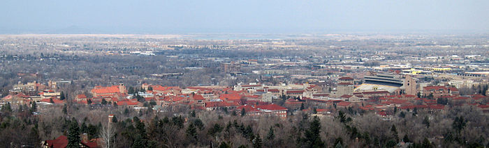

The University of Colorado Boulder (CU Boulder,[9] CU, or Colorado) is a public research university in Boulder, Colorado, United States. Founded in 1876, five months before Colorado became a state, it is the flagship university of the University of Colorado system. CU Boulder is a member of the Association of American Universities and is classified among R1: Doctoral Universities – Very high research activity.[10]
The university consists of nine colleges and schools and offers over 150 academic programs, enrolling more than 35,000 students as of January 2022.[11] In 2021, the university attracted the support of over $634 million for research and spent $536 million on research and development according to the National Science Foundation, ranking it 50th in the nation.[12][13]
The Colorado Buffaloes compete in 17 varsity sports and are members of the NCAA Division I Pac-12 Conference. The Buffaloes have won 28 national championships: 20 in skiing, seven total in men's and women's cross country, and one in football. The university has produced 10 Olympic medalists. Alumni, faculty, and affiliates include 5 Nobel Prize laureates, 10 Pulitzer Prize winners, 11 MacArthur "Genius Grant" recipients, 1 Turing Award laureate, 20 astronauts and 2 associate justice of the United States Supreme Court have been affiliated with CU Boulder as alumni, researchers, or faculty.[14][15][16][17][18]
On March 14, 1876, the Colorado territorial legislature passed an amendment to the state constitution that provided money for the establishment of the University of Colorado in Boulder, the Colorado School of Mines in Golden, and the Colorado Agricultural College in Fort Collins.
Two cities competed for the site of the University of Colorado: Boulder and Cañon City. The consolation prize for the losing city was to be the home to the new Colorado State Prison. Cañon City was at a disadvantage as it was already the home of the Colorado Territorial Prison (there are now six prisons in the Cañon City area).
The cornerstone of the building that became Old Main was laid on September 20, 1875. The doors of the university opened on September 5, 1877. At the time, there were few high schools in the state that could adequately prepare students for university work, so in addition to the university, a preparatory school was formed on campus. In the fall of 1877, the student body consisted of 15 students in the college proper and 50 students in the preparatory school. There were 38 men and 27 women, and their ages ranged from 12 to 23 years.[19]
During World War II, Colorado was one of 131 colleges and universities nationally that took part in the V-12 Navy College Training Program which offered students a path to a navy commission.[20]
CU hired its first female professor, Mary Rippon, in 1878.[21] It hired its first African-American professor, Charles H. Nilon, in 1956, and its first African-American librarian, Mildred Nilon, in 1962.[22] Its first African American female graduate, Lucile Berkeley Buchanan, received her degree in 1918.[23]
The main CU Boulder campus is located south of the Pearl Street Mall and east of Chautauqua Auditorium. It consists of academic and residential buildings as well as research facilities. The East Campus is about a quarter-mile from the main campus and is composed mainly of athletic fields and research buildings. CU Boulder's campus has been ranked as one of the most beautiful college campuses in the United States by Travel + Leisure and Condé Nast Traveler.[24][25][26]
The 2022 annual ranking of U.S. News & World Report categorizes CU Boulder as "selective".[43] For the Class of 2025 (enrolled fall 2021), CU Boulder received 54,756 applications and accepted 43,576 (79.6%). Of those accepted, 6,785 enrolled, a yield rate (the percentage of accepted students who choose to attend the university) of 15.6%.[41] CU Boulder's freshman retention rate is 87%, with 74% going on to graduate within six years.[41]
Of the 32% of the incoming freshman class who submitted SAT scores; the middle 50 percent Composite scores were 1180–1380.[41] Of the 16% of enrolled freshmen in 2021 who submitted ACT scores; the middle 50 percent Composite score was between 25 and 31.[41] In the 2020–2021 academic year, 8 freshman students were National Merit Scholars.[44]
The University of Colorado Boulder is divided into several colleges and schools. While the college of Arts and Sciences is by far the largest, the university also consists of the college of Engineering and Applied Sciences, the Program in Environmental Design, Education, Music, Law, and the Leeds School of Business, plus a new College of Media, Communication, and Information that debuted in 2014. Most, if not all, of these colleges and schools, also incorporate master- and doctorate-level degree programs. At the university, there are currently approximately 3,400 courses available in over 150 disciplines making up 85 majors ranging from Accounting to Women's Studies.